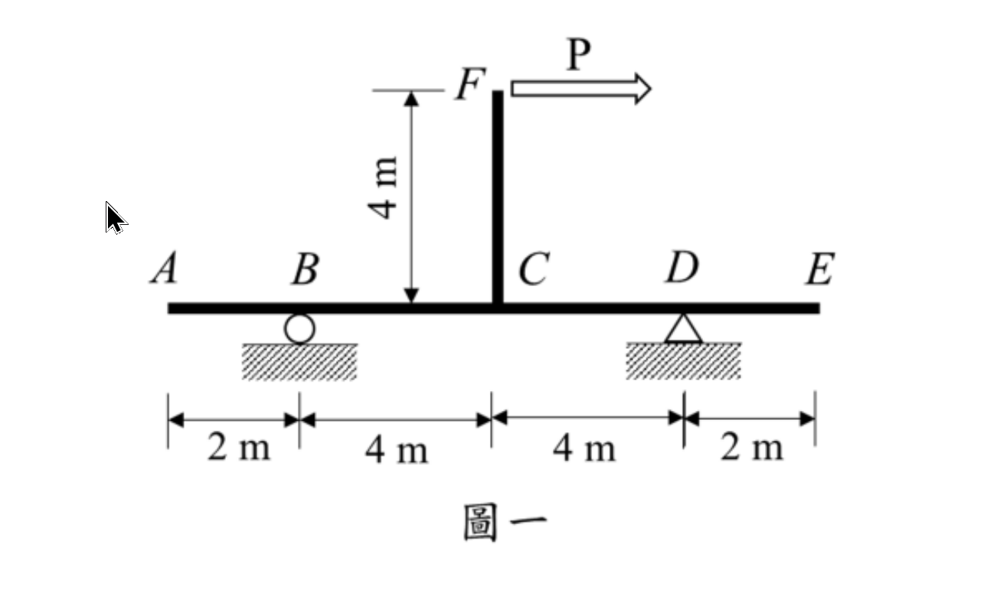

考題編號：SA-2023-1
主分類： SA-U1-2 靜定結構分析
副分類： SA-U2 結構變位分析
分析法： 靜定分析 / 單位力法
標籤： 靜定剛架 支承沉陷 剛體位移 單位力法 疊加原理
1. 原始題目重述 (Problem Restatement)
試分析一平面構架如圖一所示，點 D 為鉸支承，點 B 為滾支承，假設所有桿件之彈性模數與斷面慣性矩乘積為 $EI = 20,000 \text{ kN-m}^2$。若構架中點 D 支承下陷 $3 \text{ mm}$ 情況下，為使點 E 垂直向位移為零，試求應在點 F 施加之水平力 P 大小為何？（25 分）

圖說：水平梁 AE 由 B 點（滾支承）與 D 點（鉸支承）支撐。長度配置為 AB=2m, BC=4m, CD=4m, DE=2m。C 點連接垂直桿 CF，長度 4m。F 點承受向右水平力 P。D 點發生 3mm 垂直下陷。所有桿件 $EI = 20,000 \text{ kN-m}^2$。
2. 考題核心精神與出題者意圖 (Core Concepts & Examiner's Intent)
核心精神：
- 靜定結構的支承沉陷特性：考生必須看出本題為靜定結構，因此 D 點下陷不會產生內力與彈性變形，僅會產生繞 B 點的剛體旋轉位移。
- 力量移轉與等效載重：作用在 F 點的水平力 P，必須等效移轉至 C 點，轉換為一個集中力偶彎矩。
- 疊加原理的應用：將「剛體位移」與「外力產生的彈性位移」分開計算後疊加，解出使 E 點位移為零的 P 值。
3. 解題戰略地圖與陷阱分析 (Strategic Roadmap & Trap Analysis)
戰略步驟：
- 剛體位移計算：計算 D 點下陷 3mm 對 E 點造成的向下垂直位移。
- 外力等效移轉：將 F 點的水平力 P 移至 C 點，產生順時針力偶 $M_C = 4P$。
- 彈性位移計算：利用單位力法（虛功法），計算 C 點承受集中力偶時，E 點所產生的垂直位移。
- 位移疊加求解：令向上彈性位移等於向下剛體位移，解出 P 值。
陷阱分析：
- 陷阱一：誤判為靜不定結構。若誤用傾角變位法或彎矩分配法，會陷入極大且無謂的計算量，甚至從根本上算錯。
- 陷阱二：力偶方向判斷錯誤。將 P 移轉至 C 點時，必須正確判斷出是「順時針」力偶 $4P$，否則彈性變形的位移方向會相反。
- 陷阱三：單位一致性。下陷量給定為 3 mm，但在計算時必須轉換為 m (0.003 m)，以配合 $EI$ 的單位 ($\text{kN-m}^2$)。
3.5 變數層次分析 (Variable Hierarchy Analysis)
複習提示：第一次解題後，在每個卡住的知識點旁標記
⚠；第二次複習時只看有⚠的項目。
最終目標
透過疊加支承沉陷的剛體位移與外力 P 的彈性位移，求解使 E 點總垂直位移為零的力 P
本題關鍵公式（依計算順序）
$\boxed{\cdot}$ = 需由前步驟推導，非題目直接給定的變數
$$\text{Step 1: } (\Delta_E)_{\text{剛體}} = \frac{\Delta_D}{L_{BD}} \times L_{BE}$$
$$\text{Step 2: } M_C = P \times L_{FC}$$
$$\text{Step 3: } (\Delta_E)_P = \int \frac{M \cdot m}{EI} dx$$
$$\text{Step 4: } \boxed{(\Delta_E)_{\text{剛體}}} \downarrow = \boxed{(\Delta_E)_P} \uparrow \Rightarrow P$$
L1：題目直接給定
看到題目就能讀出的數字，不需要任何公式。
| 符號 | 數值 | 說明 |
|---|---|---|
| $EI$ | $20,000\text{ kN-m}^2$ | 桿件抗彎剛度 |
| $\Delta_D$ | $3\text{ mm} = 0.003\text{ m}$ | D 點支承下陷量 |
| $L_{BD}$ | $8\text{ m}$ | B、D 支承間距 |
| $L_{BE}$ | $10\text{ m}$ | B 支承至 E 點距離 |
| $L_{FC}$ | $4\text{ m}$ | 垂直桿 CF 長度 |
L2：需知識點推導
需要知道公式名稱與適用條件，套入 L1 即可算出。
Step 1：剛體位移計算
| 符號 | 公式/來源 | 卡關? |
|---|---|---|
| $(\Delta_E)_{\text{剛體}}$ | 剛體旋轉幾何關係：$(\Delta_D / L_{BD}) \times L_{BE}$ |
Step 2 & 3：等效力偶與單位力法
| 符號 | 公式/來源 | 卡關? |
|---|---|---|
| $M_C$ | 力平移：$P \times 4$ (順時針) | |
| $(\Delta_E)_P$ | 圖形相乘法或積分法：$\sum \frac{A \cdot m_c}{EI}$ |
L3：深層知識（不懂就卡住）
| 知識點 | 說明 | 卡關? |
|---|---|---|
| 靜定結構沉陷特性 | 靜定結構支承沉陷不會產生內力，僅有剛體位移 | |
| 單位力法符號判定 | 虛功為正代表實際位移方向與虛力設定方向相同 |
4. 步驟化詳細計算過程 (Step-by-Step Detailed Calculation)
Step 1：判斷結構型式與剛體位移
本結構由 B (滾支承)、D (鉸支承) 支撐，反力數為 $1+2=3$，無內部鉸與多餘連桿，為靜定結構。
因此，D 點下陷不會產生彈性彎矩，僅使水平梁 AE 繞 B 點產生順時針剛體旋轉。
- B 點位移為 0，D 點向下位移 $\Delta_D = 3 \text{ mm} = 0.003 \text{ m}$。
- 剛體旋轉角：$\alpha = \frac{\Delta_D}{L_{BD}} = \frac{0.003}{8} = 0.000375 \text{ rad}$ (順時針)
- E 點因剛體旋轉產生的向下位移 $(\Delta_E)_{\text{剛體}}$：
$$ (\Delta_E)_{\text{剛體}} = \alpha \times L_{BE} = 0.000375 \times (4+4+2) = 0.000375 \times 10 = 0.00375 \text{ m} $$
(向下)
Step 2：將外力 P 等效移轉至水平梁
外力 P 作用在 F 點向右。將其移轉至 C 點，可等效為：
- 集中水平力 $P$ (由 D 支承承受，不產生梁彎矩)
- 順時針集中力偶 $M_C = P \times 4 \text{ m} = 4P \text{ (kN-m)}$
Step 3：計算外力 P 產生的 E 點彈性位移 $(\Delta_E)_P$
使用單位力法求解，計算梁 B-D 段因 $M_C$ 產生的變形對 E 點的影響。
真實彎矩圖 $M(x)$：
在 C 點施加順時針彎矩 $4P$。
- 取 B 點力矩平衡 $\Sigma M_B = 0 \Rightarrow V_D \times 8 - 4P = 0 \Rightarrow V_D = 0.5P$ (向上)
-
垂直力平衡 $\Sigma F_y = 0 \Rightarrow V_B = 0.5P$ (向下)
因此，真實彎矩分布為： -
B 到 C ($x=0$ 到 $4\text{m}$)：下緣受壓，為負彎矩，C 點左側 $M_{C-} = -0.5P \times 4 = -2P$。
- C 到 D ($x=4$ 到 $8\text{m}$)：C 點右側 $M_{C+} = -2P + 4P = 2P$，向 D 點線性遞減至 $0$。
此為反對稱三角形彎矩圖。
虛彎矩圖 $m(x)$：
為求 E 點的垂直位移，於 E 點施加向下的單位虛力 $1$。
- 取 B 點力矩平衡 $\Sigma M_B = 0 \Rightarrow v_D \times 8 - 1 \times 10 = 0 \Rightarrow v_D = 1.25$ (向上)
-
垂直力平衡 $\Sigma F_y = 0 \Rightarrow v_B = 0.25$ (向下)
因此，BD 跨間的虛彎矩分布為： -
從 B 點 ($0$) 線性遞減至 D 點 ($v_B \times 8 = -2$)。即 $m(x) = -0.25x$。
圖形相乘法積分：
$$(\Delta_E)_P = \int_0^8 \frac{M \cdot m}{EI} dx = \frac{1}{EI} \sum (A \cdot m_c)$$
- B 到 C 面積：$A_1 = \frac{1}{2} \times 4 \times (-2P) = -4P$。形心距 B 點 $\frac{8}{3}\text{ m}$。對應虛彎矩 $m_1 = -0.25 \times \frac{8}{3} = -\frac{2}{3}$。
- C 到 D 面積：$A_2 = \frac{1}{2} \times 4 \times (2P) = 4P$。形心距 B 點 $\frac{16}{3}\text{ m}$。對應虛彎矩 $m_2 = -0.25 \times \frac{16}{3} = -\frac{4}{3}$。
$$(\Delta_E)_P = \frac{1}{EI} \left[ (-4P)\left(-\frac{2}{3}\right) + (4P)\left(-\frac{4}{3}\right) \right] = \frac{1}{EI} \left( \frac{8P}{3} - \frac{16P}{3} \right) = -\frac{8P}{3EI}$$
因虛力向下，虛功結果為負表示位移方向為向上。
$$\text{向上位移 } (\Delta_E)_P = \frac{8P}{3EI}$$
Step 4：位移疊加求解
題目要求 E 點總垂直位移為零：
$$\Delta_E = (\Delta_E)_P \uparrow - (\Delta_E)_{\text{剛體}} \downarrow = 0$$
$$\frac{8P}{3EI} = 0.00375$$
代入 $EI = 20,000 \text{ kN-m}^2$：
$$\frac{8P}{3 \times 20,000} = 0.00375$$
$$\frac{8P}{60,000} = 0.00375$$
$$8P = 225$$
$$\boxed{P = 28.125 \text{ kN}}$$
5. 關鍵爭議點與進階探討 (Critical Issues & Advanced Discussion)
- 剛架 vs. 連續梁：題幹雖稱之為「平面構架」，但垂直桿 CF 並無其他橫向束制，其受力行為完全可簡化為作用於 C 點的等效力偶。這種簡化是結構學考題中常見的降維手法，能大幅減少計算複雜度。
- 單位力法的選擇：求 E 點位移時，除了單位力法，亦可使用共軛梁法。共軛梁法中，E 點為固定端，其反力矩即為 E 點位移。雖然殊途同歸，但在含有反對稱載重的分段梁中，單位力法（配合圖形相乘）通常較不易在形心與力臂判斷上發生正負號的錯誤。